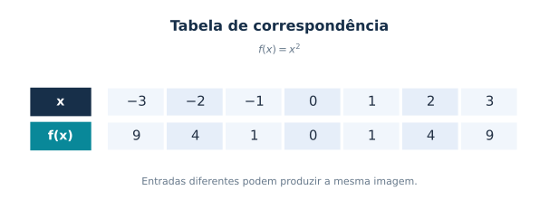
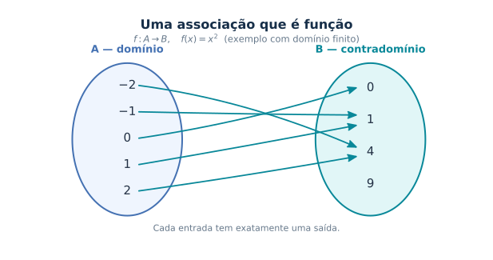
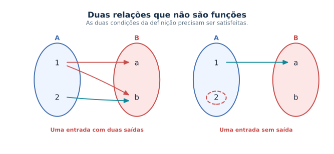
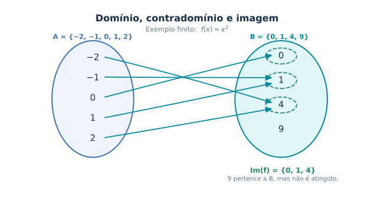
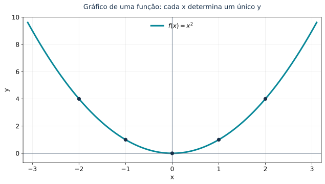
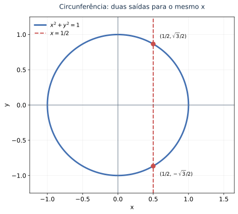
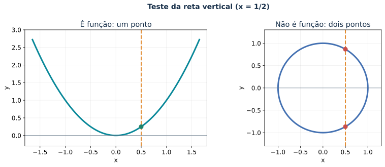
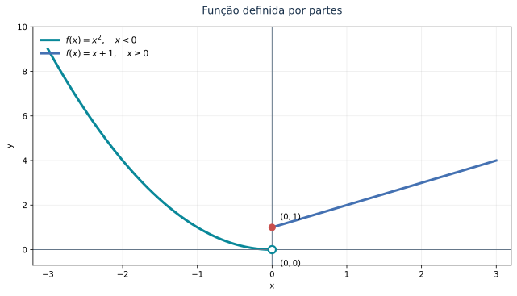

📘 Módulo 1.10: Conceito Formal de Função
🏠 ← Sumário do Curso · ← Cursos de Matemática · ← Seção de Matemática
🎯 Aula anterior: 1.9 Trigonometria Essencial
🎯 Próxima aula: 1.11 Revisão Gráfica e Algébrica
Toda regra que associa entradas a saídas define uma função?
O que precisamos especificar, além de uma fórmula, para definir uma função matematicamente?
Ao final desta aula, você deverá ser capaz de:
- Compreender a definição formal de função \(f:A\to B\).
- Distinguir domínio, contradomínio e imagem.
- Identificar quando uma relação entre conjuntos representa uma função.
- Interpretar gráficos utilizando o teste da reta vertical.
- Compreender as condições de igualdade entre funções.
- Reconhecer que uma mesma expressão algébrica pode definir funções diferentes quando os domínios são distintos.
- Interpretar funções definidas por partes em situações elementares.
1 📘 Conceito formal de função
Até aqui, já utilizamos funções em diferentes contextos.
Estudamos expressões como
\[ f(x)=x^2, \]
\[ g(x)=\frac{1}{x-2}, \]
e
\[ h(x)=\sin x. \]
Agora precisamos dar um passo conceitual importante: compreender o que é uma função formalmente.
Essa formalização será necessária porque, no Cálculo, não estudaremos apenas fórmulas. Investigaremos objetos matemáticos caracterizados por seu domínio, contradomínio, imagem e comportamento.
1.1 💡 A ideia intuitiva
Intuitivamente, uma função é uma regra que associa entradas a saídas.
Por exemplo, a regra
\[ f(x)=x^2 \]
associa a cada número real \(x\) o número real \(x^2\).
Assim,
\[ f(2)=4,\qquad f(-3)=9,\qquad f(0)=0. \]

Podemos imaginar uma função como uma máquina:
\[ x\longmapsto f(x). \]
A entrada é \(x\); a saída é \(f(x)\).
Essa imagem é útil para começar, mas não é suficiente para a matemática formal. Precisamos especificar quais entradas são permitidas e em que conjunto estão as saídas.
1.2 📐 Definição formal de função
Uma função de um conjunto \(A\) em um conjunto \(B\) é uma correspondência que associa a cada elemento de \(A\) exatamente um elemento de \(B\).
Escrevemos:
\[ f:A\to B. \]
Nessa notação:
- \(A\) é o domínio;
- \(B\) é o contradomínio;
- \(f\) é a função;
- \(f(x)\) é o valor associado ao elemento \(x\in A\).
A condição fundamental pode ser expressa assim:
Para cada \(x\in A\), existe um único elemento \(y\in B\) tal que \(y=f(x)\).
Essa definição exige duas condições:
- Todo elemento do domínio precisa estar associado a algum elemento do contradomínio.
- Nenhum elemento do domínio pode estar associado a dois valores diferentes.


No primeiro diagrama de relação não funcional, uma entrada possui duas imagens. No segundo, existe uma entrada sem imagem.
Ambas as situações violam a definição de função.
1.3 🧭 Domínio
O domínio é o conjunto de todas as entradas permitidas.
Se escrevemos
\[ f:A\to B, \]
o domínio é o conjunto \(A\).
Por exemplo, considere
\[ f:\mathbb{R}\to\mathbb{R}, \qquad f(x)=x^2. \]
Nesse caso, o domínio é
\[ D_f=\mathbb{R}. \]
Qualquer número real pode ser utilizado como entrada.
Considere agora
\[ g(x)=\sqrt{x}. \]
Se trabalhamos apenas com números reais, precisamos exigir
\[ x\geq 0. \]
Portanto, o domínio real natural dessa expressão é
\[ D_g=[0,+\infty). \]
O domínio faz parte da definição da função: não basta conhecer a expressão algébrica.
1.4 🎯 Contradomínio
O contradomínio é o conjunto no qual declaramos que os valores da função estão contidos.
Na notação
\[ f:A\to B, \]
o conjunto \(B\) é o contradomínio.
Por exemplo,
\[ f:\mathbb{R}\to\mathbb{R}, \qquad f(x)=x^2. \]
O contradomínio é \(\mathbb{R}\).
Entretanto, a função nunca assume valores negativos. Isso nos leva ao próximo conceito.
1.5 🖼️ Imagem
A imagem é o conjunto de todos os valores que a função efetivamente assume.
Para
\[ f:\mathbb{R}\to\mathbb{R}, \qquad f(x)=x^2, \]
temos
\[ \operatorname{Im}(f)=[0,+\infty). \]
De fato, \(x^2\) nunca é negativo, e todo número real não negativo é quadrado de algum número real.
Em geral,
\[ \operatorname{Im}(f)\subseteq B. \]
A imagem está contida no contradomínio, mas não precisa coincidir com ele.
1.6 🎯 Domínio, contradomínio e imagem: comparação
| Conceito | Significado |
|---|---|
| Domínio | Conjunto das entradas permitidas. |
| Contradomínio | Conjunto estabelecido para as saídas. |
| Imagem | Conjunto dos valores efetivamente assumidos pela função. |
Considere novamente
\[ f:\mathbb{R}\to\mathbb{R}, \qquad f(x)=x^2. \]
Temos:
\[ D_f=\mathbb{R}, \]
\[ \text{Contradomínio}=\mathbb{R}, \]
e
\[ \operatorname{Im}(f)=[0,+\infty). \]
Para visualizar a diferença entre esses conjuntos, considere o exemplo finito
\[ A=\{-2,-1,0,1,2\}, \]
\[ B=\{0,1,4,9\}, \]
com a regra \(f(x)=x^2\).

Nesse exemplo,
\[ \operatorname{Im}(f)=\{0,1,4\}. \]
Observe que \(9\in B\), mas \(9\notin\operatorname{Im}(f)\).
O contradomínio contém um elemento que não é atingido pela função. É justamente essa possibilidade que distingue contradomínio de imagem.
1.7 🧩 Funções como relações especiais
Uma relação de um conjunto \(A\) em um conjunto \(B\) é um subconjunto do produto cartesiano
\[ A\times B. \]
Seus elementos são pares ordenados
\[ (x,y), \]
em que \(x\in A\) e \(y\in B\).
Uma função é uma relação especial: cada elemento \(x\in A\) aparece como primeira coordenada de exatamente um par ordenado.
Por exemplo, a função \(f(x)=x^2\), com domínio real, pode ser representada pelo conjunto
\[ G_f=\{(x,x^2)\mid x\in\mathbb{R}\}. \]
Essa representação será importante para compreender os gráficos de funções.
1.8 📊 Gráfico de uma função
O gráfico de uma função real de variável real é o conjunto dos pontos
\[ (x,f(x)) \]
no plano cartesiano.
Se
\[ f:A\to\mathbb{R}, \qquad A\subseteq\mathbb{R}, \]
então seu gráfico é
\[ G_f=\{(x,f(x))\mid x\in A\}. \]
Por exemplo, o gráfico de
\[ f(x)=x^2 \]
é
\[ G_f=\{(x,x^2)\mid x\in\mathbb{R}\}. \]
Esse conjunto de pontos forma uma parábola.

O código utiliza NumPy e Matplotlib para reproduzir a parábola.
import numpy as np
import matplotlib.pyplot as plt
from pathlib import Path
plt.rcParams.update({"font.family": "DejaVu Sans", "svg.fonttype": "path"})
x = np.linspace(-3.1, 3.1, 700)
fig, ax = plt.subplots(figsize=(9, 5.2))
ax.plot(x, x**2, lw=3, color="#098899", label=r"$f(x)=x^2$")
for xx in (-2, -1, 0, 1, 2):
ax.scatter(xx, xx**2, s=40, color="#172F49", zorder=4)
ax.axhline(0, color="#66788A", lw=1)
ax.axvline(0, color="#66788A", lw=1)
ax.set(xlim=(-3.2, 3.2), ylim=(-0.7, 10), xlabel="x", ylabel="y")
ax.grid(alpha=0.22)
ax.legend(frameon=False, loc="upper center", fontsize=12)
ax.set_title("Gráfico de uma função: cada x determina um único y",
pad=16, fontsize=13, color="#172F49")
fig.tight_layout()
Path("images").mkdir(exist_ok=True)
fig.savefig("images/1.10-grafico-parabola.svg", bbox_inches="tight")
plt.close(fig)1.9 🔎 O teste da reta vertical
Nem todo conjunto de pontos do plano cartesiano representa o gráfico de uma função de \(x\).
Para que isso aconteça, cada valor de \(x\) deve corresponder a exatamente um valor de \(y\).
Geometricamente, essa condição conduz ao teste da reta vertical.
Um gráfico representa uma função de \(x\) se toda reta vertical o intercepta em, no máximo, um ponto.
A parábola
\[ y=x^2 \]
passa no teste da reta vertical.
Já a circunferência
\[ x^2+y^2=1 \]
não passa, pois uma mesma reta vertical pode interceptá-la em dois pontos.

import numpy as np
import matplotlib.pyplot as plt
from pathlib import Path
a = np.linspace(0, 2*np.pi, 800)
c = 0.5
b = np.sqrt(1-c**2)
fig, ax = plt.subplots(figsize=(8.2, 6.1))
ax.plot(np.cos(a), np.sin(a), lw=3, color="#4471B2",
label=r"$x^2+y^2=1$")
ax.axvline(c, color="#C84E4C", lw=2, ls="--", label=r"$x=1/2$")
ax.scatter([c, c], [b, -b], color="#C84E4C", s=70, zorder=5)
ax.annotate(r"$(1/2,\sqrt{3}/2)$", (c, b),
xytext=(13, 12), textcoords="offset points", fontsize=10)
ax.annotate(r"$(1/2,-\sqrt{3}/2)$", (c, -b),
xytext=(13, -19), textcoords="offset points", fontsize=10)
ax.axhline(0, color="#66788A", lw=1)
ax.axvline(0, color="#66788A", lw=1)
ax.set_aspect("equal", adjustable="box")
ax.set(xlim=(-1.25, 1.65), ylim=(-1.25, 1.25), xlabel="x", ylabel="y")
ax.grid(alpha=0.2)
ax.legend(frameon=False, loc="upper left", fontsize=11)
ax.set_title("Circunferência: duas saídas para o mesmo x",
pad=16, fontsize=13, color="#172F49")
fig.tight_layout()
Path("images").mkdir(exist_ok=True)
fig.savefig("images/1.10-relacao-circunferencia.svg", bbox_inches="tight")
plt.close(fig)
import numpy as np
import matplotlib.pyplot as plt
from pathlib import Path
fig, axes = plt.subplots(1, 2, figsize=(11.6, 4.7))
x = np.linspace(-1.65, 1.65, 500)
axes[0].plot(x, x**2, color="#098899", lw=3)
axes[0].axvline(0.5, color="#E28C32", lw=2, ls="--")
axes[0].scatter([0.5], [0.25], color="#21846C", s=65, zorder=5)
axes[0].set(xlim=(-1.8, 1.8), ylim=(-0.3, 3.0),
title="É função: um ponto", xlabel="x", ylabel="y")
t = np.linspace(0, 2*np.pi, 600)
axes[1].plot(np.cos(t), np.sin(t), color="#4471B2", lw=3)
axes[1].axvline(0.5, color="#E28C32", lw=2, ls="--")
q = np.sqrt(3)/2
axes[1].scatter([0.5, 0.5], [q, -q], color="#C84E4C", s=65, zorder=5)
axes[1].set(xlim=(-1.3, 1.3), ylim=(-1.3, 1.3),
title="Não é função: dois pontos", xlabel="x", ylabel="y")
axes[1].set_aspect("equal", adjustable="box")
for ax in axes:
ax.axhline(0, lw=0.8, color="#66788A")
ax.grid(alpha=0.2)
ax.title.set_color("#172F49")
fig.suptitle("Teste da reta vertical (x = 1/2)",
fontsize=14, color="#172F49", weight="bold")
fig.tight_layout()
Path("images").mkdir(exist_ok=True)
fig.savefig("images/1.10-teste-reta-vertical.svg", bbox_inches="tight")
plt.close(fig)1.10 ⚖️ Igualdade de funções
Neste curso, consideraremos que uma função é especificada por seu domínio, contradomínio e regra de associação.
Dessa forma, duas funções são iguais quando:
- possuem o mesmo domínio;
- possuem o mesmo contradomínio;
- associam o mesmo valor a cada elemento do domínio.
Considere:
\[ f:\mathbb{R}\to\mathbb{R}, \qquad f(x)=x^2, \]
e
\[ g:[0,+\infty)\to\mathbb{R}, \qquad g(x)=x^2. \]
Embora as expressões algébricas sejam iguais, as funções não são iguais, pois seus domínios são diferentes.
Por exemplo, \(f(-2)=4\), enquanto \(g(-2)\) não está definido, pois \(-2\) não pertence ao domínio de \(g\).
Isso é importante no Cálculo: uma expressão algébrica, isoladamente, não determina todos os aspectos de uma função.
1.11 🧮 Uma mesma expressão pode assumir formas diferentes
Considere
\[ f(x)=\sqrt{x^2}. \]
Para todo número real \(x\),
\[ \sqrt{x^2}=|x|. \]
Portanto,
\[ f(x)= \begin{cases} x, & x\geq 0,\\ -x, & x<0. \end{cases} \]
Se restringirmos o domínio a \([0,+\infty)\), teremos
\[ \sqrt{x^2}=x. \]
Se restringirmos o domínio a \((-\infty,0]\), teremos
\[ \sqrt{x^2}=-x. \]
A expressão e o domínio precisam ser considerados em conjunto.
1.12 🧩 Funções reais de variável real
No Cálculo de uma variável, estudamos principalmente funções reais de variável real.
São funções da forma
\[ f:A\to\mathbb{R}, \qquad A\subseteq\mathbb{R}. \]
A entrada é um número real, e a saída também é um número real.
Exemplos:
\[ f(x)=x^2, \]
\[ g(x)=\frac{1}{x-1}, \]
\[ h(x)=\ln x, \]
\[ p(x)=\sin x. \]
Essas funções possuem domínios diferentes, determinados pelas respectivas regras e condições de definição.
1.13 🧩 Uma primeira introdução às funções definidas por partes
Algumas funções são definidas por regras diferentes em regiões distintas do domínio.
Por exemplo,
\[ f(x)= \begin{cases} x^2, & x<0,\\ x+1, & x\geq 0. \end{cases} \]
Para calcular \(f(-2)\), usamos a primeira regra, pois \(-2<0\):
\[ f(-2)=(-2)^2=4. \]
Para calcular \(f(3)\), usamos a segunda regra, pois \(3\geq 0\):
\[ f(3)=3+1=4. \]
Observe que o valor \(x=0\) pertence à segunda condição. Portanto,
\[ f(0)=0+1=1. \]

import numpy as np
import matplotlib.pyplot as plt
from pathlib import Path
plt.rcParams.update({
"font.family": "DejaVu Sans",
"svg.fonttype": "path"
})
x_left = np.linspace(-3, 0, 500, endpoint=False)
y_left = x_left**2
x_right = np.linspace(0, 3, 500)
y_right = x_right + 1
fig, ax = plt.subplots(figsize=(9, 5.2))
ax.plot(x_left, y_left, lw=3, color="#098899",
label=r"$f(x)=x^2,\quad x<0$")
ax.plot(x_right, y_right, lw=3, color="#4471B2",
label=r"$f(x)=x+1,\quad x\geq 0$")
ax.scatter([0], [0], s=85, facecolors="white",
edgecolors="#098899", linewidths=2.2, zorder=5)
ax.scatter([0], [1], s=65, color="#C84E4C", zorder=5)
ax.annotate(r"$(0,0)$", (0, 0), xytext=(10, -20),
textcoords="offset points", fontsize=10)
ax.annotate(r"$(0,1)$", (0, 1), xytext=(10, 10),
textcoords="offset points", fontsize=10)
ax.axhline(0, color="#66788A", lw=1)
ax.axvline(0, color="#66788A", lw=1)
ax.set(xlim=(-3.2, 3.2), ylim=(-0.7, 10), xlabel="x", ylabel="y")
ax.grid(alpha=0.22)
ax.legend(frameon=False, loc="upper left", fontsize=11)
ax.set_title("Função definida por partes", pad=16,
fontsize=13, color="#172F49")
fig.tight_layout()
Path("images").mkdir(exist_ok=True)
fig.savefig("images/1.10-funcoes-por-partes.svg", bbox_inches="tight")
plt.close(fig)O exemplo mostra que uma única função pode utilizar expressões diferentes em regiões distintas do domínio.
Por enquanto, nosso objetivo é saber identificar a regra correta e calcular os valores da função. O estudo detalhado dos pontos de troca, dos limites laterais e da continuidade será desenvolvido no Módulo 1.22-AP — Funções por Partes.
1.14 🛠️ Funções e modelagem
Em aplicações, uma função costuma representar uma dependência entre grandezas.
Por exemplo:
- a posição pode ser função do tempo;
- a temperatura pode ser função da altitude;
- o custo pode ser função da quantidade produzida;
- a área pode ser função do raio;
- a população pode ser função do tempo.
Nesses casos, o domínio também depende do contexto.
Se \(t\) representa o tempo transcorrido após o início de um experimento, por exemplo, normalmente consideramos
\[ t\geq 0. \]
Mesmo que uma fórmula esteja definida para valores negativos, o modelo pode não ter significado físico nesses valores.
| Conceito | Síntese matemática |
|---|---|
| Função \(f:A\to B\) | A cada \(x\in A\) corresponde exatamente um \(f(x)\in B\). |
| Domínio | Conjunto \(A\) das entradas admissíveis. |
| Contradomínio | Conjunto \(B\) declarado para as saídas. |
| Imagem | \(f(A)=\{f(x):x\in A\}\subseteq B\). |
| Gráfico | Conjunto dos pares \((x,f(x))\), com \(x\in A\). |
| Teste da reta vertical | Uma reta vertical não pode interceptar o gráfico em mais de um ponto. |
| Igualdade de funções | Exige mesmo domínio, mesmo contradomínio e mesmos valores associados. |
| Função por partes | Diferentes expressões podem definir uma única função, desde que cada entrada tenha exatamente uma saída. |
A definição formal de função será essencial para o estudo dos limites, das derivadas e das integrais.
No Cálculo, não basta conhecer uma expressão algébrica. Precisamos compreender o domínio da função, os valores que ela assume e seu comportamento nas proximidades de cada ponto.
Nas próximas aulas, essa compreensão será ampliada progressivamente.
2 🧪 Exercícios propostos
2.1 🧪 Exercício 1
Determine o domínio real natural de cada expressão:
\(f(x)=x^2+1\)
\(g(x)=\sqrt{x-4}\)
\(h(x)=\dfrac{1}{x+2}\)
\(p(x)=\ln(x-1)\)
2.2 🧪 Exercício 2
Considere
\[ f:\mathbb{R}\to\mathbb{R}, \qquad f(x)=x^2. \]
Determine:
o domínio;
o contradomínio;
a imagem.
2.3 🧪 Exercício 3
Explique por que a circunferência
\[ x^2+y^2=1 \]
não é o gráfico de uma função \(y=f(x)\) em todo o intervalo \([-1,1]\).
2.4 🧪 Exercício 4
Considere
\[ f(x)= \begin{cases} 2x, & x<1,\\ x^2, & x\geq 1. \end{cases} \]
Calcule:
\(f(0)\);
\(f(1)\);
\(f(3)\).
2.5 🧪 Exercício 5
As funções abaixo são iguais? Justifique.
\[ f:\mathbb{R}\to\mathbb{R}, \qquad f(x)=x^2, \]
\[ g:[0,+\infty)\to\mathbb{R}, \qquad g(x)=x^2. \]
2.6 🧪 Exercício 1
a) Para \(f(x)=x^2+1\), não há restrição real. Logo,
\[ D_f=\mathbb{R}. \]
b) Para \(g(x)=\sqrt{x-4}\), precisamos de
\[ x-4\geq 0. \]
Assim,
\[ D_g=[4,+\infty). \]
c) Para \(h(x)=\dfrac{1}{x+2}\), o denominador deve ser diferente de zero:
\[ x+2\neq 0. \]
Portanto,
\[ D_h=\mathbb{R}\setminus\{-2\}. \]
d) Para \(p(x)=\ln(x-1)\), o argumento do logaritmo deve ser positivo:
\[ x-1>0. \]
Logo,
\[ D_p=(1,+\infty). \]
2.7 🧪 Exercício 2
Para
\[ f:\mathbb{R}\to\mathbb{R}, \qquad f(x)=x^2, \]
temos:
- Domínio:
\[ D_f=\mathbb{R}. \]
- Contradomínio:
\[ B=\mathbb{R}. \]
- Imagem:
\[ \operatorname{Im}(f)=[0,+\infty). \]
Isso ocorre porque \(x^2\geq 0\) para todo real \(x\), e todo número não negativo é quadrado de algum número real.
2.8 🧪 Exercício 3
A circunferência
\[ x^2+y^2=1 \]
não representa o gráfico de uma função \(y=f(x)\) em todo o intervalo \([-1,1]\) porque alguns valores de \(x\) correspondem a dois valores de \(y\).
Por exemplo, para \(x=0\):
\[ y^2=1. \]
Logo,
\[ y=1\quad\text{ou}\quad y=-1. \]
A mesma entrada teria duas saídas diferentes, contrariando a definição de função.
2.9 🧪 Exercício 4
A função é
\[ f(x)= \begin{cases} 2x, & x<1,\\ x^2, & x\geq 1. \end{cases} \]
a) Como \(0<1\), usamos a primeira regra:
\[ f(0)=2\cdot0=0. \]
b) Como \(1\geq1\), usamos a segunda regra:
\[ f(1)=1^2=1. \]
c) Como \(3\geq1\), usamos a segunda regra:
\[ f(3)=3^2=9. \]
2.10 🧪 Exercício 5
As funções não são iguais.
Embora possuam a mesma expressão algébrica e o mesmo contradomínio, seus domínios são diferentes:
\[ D_f=\mathbb{R}, \]
enquanto
\[ D_g=[0,+\infty). \]
Para serem iguais, as funções precisam ter o mesmo domínio, o mesmo contradomínio e a mesma regra de associação.
3 🧩 Quiz — Conceito Formal de Função
Q1. Uma função \(f:A\to B\) associa:
✓A cada elemento de \(A\) exatamente um elemento de \(B\).
✗A cada elemento de \(A\) pelo menos dois elementos de \(B\).
✗Apenas alguns elementos de \(A\) a elementos de \(B\).
Q2. Na notação \(f:A\to B\), o conjunto \(A\) é chamado de:
✗Imagem.
✓Domínio.
✗Gráfico.
Q3. A imagem de uma função é:
✗Sempre igual ao domínio.
✗Sempre igual ao contradomínio.
✓O conjunto dos valores que a função realmente assume.
O aprofundamento é opcional. Você pode explorá-lo agora ou seguir a sequência principal e retornar depois.
- 1.21-AP — Domínio de Funções: Guia Completo — Restrições de domínio em raízes, frações, logaritmos e composições.
- 1.22-AP — Funções por Partes — Leitura detalhada de funções por partes, pontos de troca, limites laterais e continuidade.